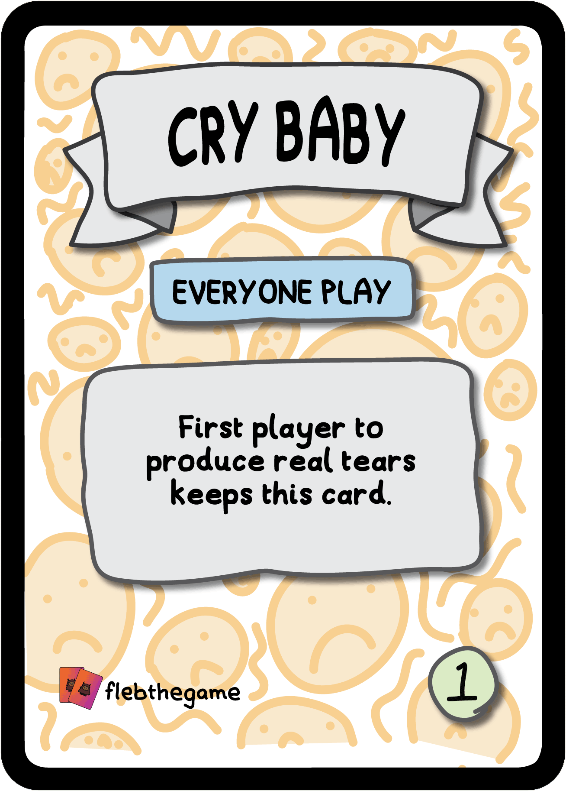
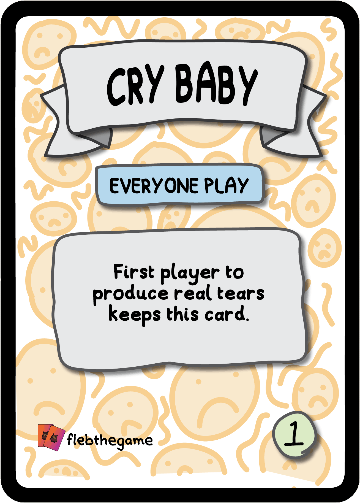

Fleb is a high paced, chaotic game that just gets more fun with replays due to different strategies.
 Fleb has carefully worded cards to ensure that everyone understands what to do in each round.

Fleb has carefully worded cards to ensure that everyone understands what to do in each round.

Rounds are intentionally left a little vague so you can bend the rules, à la Taskmaster.
Fleb has replaced all other drinking games for our friendship group and as such we have done a lot of beta testing ;)